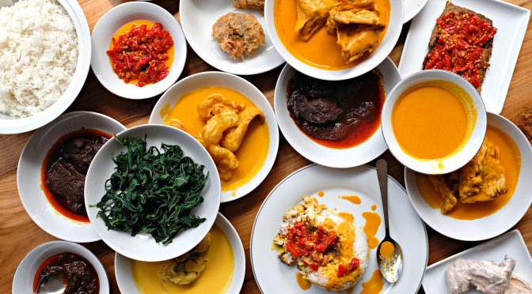

Rumah Makan Minang
Home
|
Biodata Saya
|
Profil Rumah Makan
|
Harga
Rumah Makan Minang

Menu:
Gulai Ikan Kakap
Ayam Goreng
Sop Daging Sapi
Ikan Bakar
Udang Kelong
Ayam Pop
Cincang Kembang
Cah Kangkung